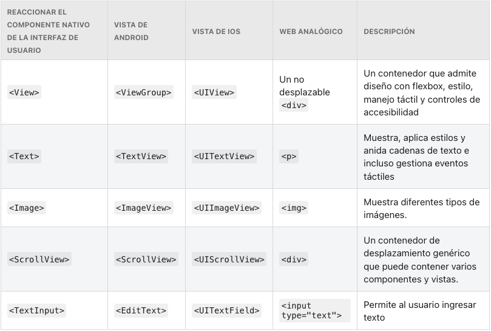

React / React Native
(y algo de JavaScript)
¿Qué es Reactjs?
Reactjs es una librería JavaScript para construir interfaces de usuario. Es la V en MVC.¿Cómo construye interfaces de usuario?
React propone construir las interfaces de usuario creando y combinando Componentes encapsulados que manejan su propio estado.¿Qué es un componente?

¿Qué es un componente?
Un componente es una clase que extiendeReact.Component (o una función) e implementa un método
render que toma un input y retorna contenido renderizable
class HelloMessage extends React.Component {
render() {
return (
<div>
Hello {this.props.name}
</div>
);
}
}
ReactDOM.render(
<HelloMessage name="world!" />,
mountNode
);
¿Qué es esa sintaxis rara que parece HTML?

JSX
JSX es una extensión de sintaxis de JavaScript, creada por Facebook, y que imita HTML (o XML). JSX es compilado a llamadas aReact.createElement()
Trabajando con JSX
Embebiendo expresiones JavaScript en JSX
- Una expresión produce un valor y puede ser escrita en cualquier lugar en donde se espere un valor.
- Un statement define comportamiento, pero no evalúa a un valor
- Siempre que se espere un statement, se puede usar una expresión (pero no a la inversa)
Por ejemplo
Válido:
a = 1
a = 1 + 3
a = 1 + (x ? 3 : 0)
Inválido:
a = if x 3 else 0 // No, no y noo
a = while(n){n--} // Error: expected Dev and found Simio
Se puede embeber cualquier expresión JavaScript en JSX, poniéndola entre llaves:
function formatName(user) {
return user.firstName + ' ' + user.lastName;
}
const user = {
firstName: 'Juan',
lastName: 'Dominguez'
};
const element = (
<h1>
Hello, {formatName(user)}!
</h1>
);
//...
if,
pasarlas como parámetro, retornarlas, etc.)
Los elementos JSX pueden tener hijos
const resto = ['tercero', 'cuarto', 'quinto'];
const elem =
<div>
<ul>
<li>Primero</li>
<li>{"Segundo"}</li>
{resto.map((message) => <li>{message}</li>)}
</ul>
</div>
const miFuncAnonima = function(){
return "Hola Bart, estoy tejiendo en un telar";
};
const miArrowFunc = () => "Hola Bart, estoy tejiendo en un telar";
const dameUnId = obj => obj.id;
const arrayDeCosas = [
{name: "El cochiloco", id: 1},
{name: "Cosme Fulanito", id: 2}
];
arrayDeCosas.map(dameUnId); // retorna [1, 2]
arrayDeCosas.map(obj => obj.id); // retorna [1, 2]
Componentes
Conceptualmente, los componentes son como funciones JavaScript: Aceptan input arbitrario ("props") y retornan elementos React qué aparece en pantalla.
// Componente funcional
function Welcome(props) {
return <h1>Hello, {props.name}</h1>;
}
class Welcome extends React.Component {
render() {
return <h1>Hello, {this.props.name}</h1>;
}
}
function App() {
return (
<div>
<Welcome name="Sara" />
<Welcome name="Cahal" />
<Welcome name="Edite" />
</div>
);
}
Las props son read-only
Al definir un componente, debemos asegurarnos de no modificar las props. En otras palabras, lafunction debe ser una función pura con respecto a las props.

State y ciclos de vida
State
function Reloj(props) {
return (
<div>
<h1>Hello, world!</h1>
<h2>It is {props.date.toLocaleTimeString()}.</h2>
</div>
);
}
function Reloj(props) {
const [date, setDate] = useState(new Date());
return (
<div>
<h1>Hello, world!</h1>
{/*Reemplazamos props por date.*/}
<h2>It is {date.toLocaleTimeString()}.</h2>
</div>
);
}
Uso correcto del State
¡No se debe modificar el State directamente!
const [state, setState] = useState({comment: ''});
// Horrible
state = 'Hello';
// Me parece correctín
setState({comment: 'Hello'});
Las actualizaciones del State pueden ser asíncronas
// Puede que no ande
setState({
counter: state.counter + props.increment,
});
// Este código sí se puede ver
setState( prevState => ({
counter: prevState.counter + props.increment
}));
Ciclo de Vida
Queremos actualizar el state cada segundo, a partir del momento en que se renderice el Component. Para esto vamos a crear un intervalo al momento de renderizar, y vamos a detenerlo cuando el componente se elimine.
function Reloj(props) {
const [date, setDate] = useState(new Date());
useEffect(() => {
// Se monto el componente
return () => {
// Se desmontó el componente
};
}, []);
...
useEffect(() => {
const timerID = setInterval(
() => tick(),
1000
);
return () => {
// Se desmontó el componente
};
}, []);
Agregamos el clean up.
useEffect(() => {
const timerID = setInterval(
() => tick(),
1000
);
setTimerID(timerID);
return () => {
clearInterval(timerID);
};
}, []);
Renderizado condicional
El renderizado condicional en React funciona de la misma manera que los condicionales de JavaScript
function Greeting(props) {
const {isLoggedIn} = props;
if (isLoggedIn) {
return <UserGreeting/>;
}
return <GuestGreeting/>;
}
function Login(props) {
const isLoggedIn = props.isLoggedIn;
const button = isLoggedIn ? (
<LogoutButton onClick={handleLogoutClick}/>
) : (
<LoginButton onClick={handleLoginClick}/>
);
return (
<div>
<Greeting isLoggedIn={isLoggedIn}/>
{button}
</div>
);
}
function Mailbox(props) {
const unreadMessages = props.unreadMessages;
return (
<div>
<h1>Hola!</h1>
{unreadMessages.length > 0 &&
<h2>
Hay {unreadMessages.length} mensajes sin leer.
</h2>
}
</div>
);
}
null en lugar de un elemento
function WarningBanner(props) {
if (!props.warn) {
return null;
}
return (
<div className="warning">
Warning!
</div>
);
}
Listas y keys
function NumberList(props) {
const numbers = props.numbers;
const listItems = numbers.map((number) =>
<li>{number}</li>
);
return (
<ul>{listItems}</ul>
);
}
const numbers = [1, 2, 3, 4, 5];
<NumberList numbers={numbers} />;
¿Para qué sirve la key?
Componentes controlados
React encara el problema de los formularios con Controlled Components. Que son componentes que renderizan un formulario y, a su vez, controlan su comportamiento frente al input de usuario
function NameForm(props){
const [value, setValue] = useState({value: ''});
handleChange = (event) => {
setState({value: event.target.value});
}
return (
<div>
<label>
Name:
<input type="text" value={state.value} onChange={handleChange}/>
</label>
<input type="submit" value="Submit"/>
</div>
);
}
Múltiples inputs
Cuando necesitamos manejar múltiples inputs, podemos agregar una propiedad "name" a cada elemento, y
dejar que el handler elija qué hacer de acuerdo al valor de event.target.name
const initialValues = {
isGoing: false,
numberOfGuests: 0,
};
const [state, setState] = useState(initialValues);
handleInputChange = (event) => {
//De la documentación oficial. Yo lo haría un poco diferente.
const target = event.target;
const value = target.type === 'checkbox' ? target.checked : target.value;
const name = target.name;
setState( prevState => ({
...prevState,
[name]: value
});
}
return (
<div>
<label>
Is going:
<input
name="isGoing"
type="checkbox"
checked={state.isGoing}
onChange={handleInputChange}/>
</label>
<br/>
<label>
Number of guests:
<input
name="numberOfGuests"
type="number"
value={state.numberOfGuests}
onChange={handleInputChange}/>
</label>
</div>
);
}
Levantando el estado
En React, llamamos "lifting state up" al proceso de mover el estado de un componente al componente inmediatamente superior en la jerarquía. Esto es útil cuando el estado debe ser compartido entre varios componentes
function Calculator() {
const [state, setState] = useState({temperature: ''});
const handleChange = (e) => {
setState({temperature: e.target.value});
}
return (
<fieldset>
<legend>Enter temperature in Celsius:</legend>
<input
value={state.temperature}
onChange={handleChange}/>
<BoilingVerdict
celsius={parseFloat(temperature)}/>
</fieldset>
);
}
}
const scaleNames = {
c: 'Celsius',
f: 'Fahrenheit'
};
function TemperatureInput () {
const [state, setState] = useState({ temperature: "" });
const handleChange = (e) => {
setState({ temperature: e.target.value });
};
return (
<fieldset>
<legend>Enter temperature in {scaleNames[props.scale]}:</legend>
<input value={state.temperature}
onChange={handleChange}/>
</fieldset>
);
}
function Calculator() {
return (
<div>
<TemperatureInput scale="c"/>
<TemperatureInput scale="f"/>
</div>
);
}
Moviendo el estado hacia arriba
Primero, vamos a reemplazar state.temperature por
props.temperature
en TemperatureInput
render() {
// Antes: state.temperature;
value={props.temperature}
// ...
}
Convirtiendo el componente en Controlled Component
Así como <input> tiene un value y un onChange, nuestro component puede
aceptar temperature y onTemperatureChange como props.
handleChange(e) {
// Antes: setState({temperature: e.target.value});
props.onTemperatureChange(e.target.value);
// ...
}
function Calculator() {
const [state, setState] = useState({temperature: '', scale: 'c'});
handleCelsiusChange(temperature) {
setState({scale: 'c', temperature});
}
handleFahrenheitChange(temperature) {
setState({scale: 'f', temperature});
}
const celsius = scale === 'f' ? tryConvert(temperature, toCelsius) : temperature;
const fahrenheit = scale === 'c' ? tryConvert(temperature, toFahrenheit) : temperature;
return (
<div>
<TemperatureInput
scale="c"
temperature={celsius}
onTemperatureChange={handleCelsiusChange}/>
<TemperatureInput
scale="f"
temperature={fahrenheit}
onTemperatureChange={handleFahrenheitChange}/>
<BoilingVerdict
celsius={parseFloat(celsius)}/>
</div>
);
}
}
Composición vs herencia
Composition
Muchas veces pensamos en un componente como una versión especializada de otro componente más generico. Por ejemplo "ErrorMessage" es una versión más específica de "Message".
En React, esto se resuelve usando composition
function ErrorMessage(){
return <Message className={"Error"} message={"El auto no está, el auto no está"}/>
}
props.children
props.children es una propiedad especial de React, con la que podemos pasar elementos o
componentes arbitrarios a un componente para ser renderizados.
function FancyBorder(props) {
return (
<div className={'FancyBorder FancyBorder-' + props.color}>
{props.children}
</div>
);
}
function WelcomeDialog() {
return (
<FancyBorder color="blue">
<h1 className="Dialog-title">
Welcome
</h1>
<p className="Dialog-message">
Thank you for visiting our spacecraft!
</p>
</FancyBorder>
);
}
function App() {
return (
<SplitPane left={<Contacts/>} right={<Chat/>} />
);
}

Context
Los contextos nos permiten pasar datos a través del árbol de componentes sin necesidad de pasar las props manualmente en cada nivel

function App() {
return(
return <Toolbar theme="dark"/>;
)
}
function Toolbar(props) {
return (
<div>
<ThemedButton theme={props.theme}/>
</div>
);
}
function ThemedButton(props) {
return <Button theme={props.theme}/>;
}
const ThemeContext = React.createContext('light');
function App() {
return (
<ThemeContext.Provider value="dark">
<Toolbar/>
</ThemeContext.Provider>
);
}
function Toolbar(props) {
return (
<div>
<ThemedButton/>
</div>
);
}
function ThemedButton(props) {
return (
<ThemeContext.Consumer>
{theme => <Button {...props} theme={theme}/>}
</ThemeContext.Consumer>
);
}
Actualizando el theme desde un componente hijo
export const ThemeContext = React.createContext({
theme: themes.dark,
toggleTheme: () => {},
});
import {ThemeContext} from './theme-context';
function ThemeTogglerButton() {
return (
<ThemeContext.Consumer>
{({theme, toggleTheme}) => (
<button
onClick={toggleTheme}
style={{backgroundColor: theme.background}}>
Toggle Theme
</button>
)}
</ThemeContext.Consumer>
);
}
export default ThemeTogglerButton;
import {ThemeContext} from './theme-context';
function ThemeTogglerButton() {
const { toggleTheme, theme } = React.useContext(ThemeContext)
return (
<button onClick={toggleTheme}
style={{backgroundColor: theme.background}}>
Toggle Theme
</button>
);
}
export default ThemeTogglerButton;
Inmutabilidad
giveAwesomePowers(person) {
person.powers = ['super-strength', 'flight'];
return person;
}
const person = new Person('Mafe');
const samePerson = person;
giveAwesomePowers(person);
console.log('are they the same?', person === samePerson);
giveAwesomePowers(person) {
return {...person, powers: ['super-strength', 'flight']};
}
handleClick() {
setState(prevState => ({
person: {...prevState.person, powers: ['super-strength', 'flight']},
}));
};
Fin
(por fin, loco, no se terminaba más...)React Native
React Native, usa JavaScript para acceder a las API de la plataforma nativa, así como para describir la renderización y el comportamiento de su UI usando componentes React.
Componentes Principales
Eventos
const ActionLink = () => {
const handlePress = (e) => {
console.log('Clickity.');
}
return (
<Button onPress={handlePress}>
Click me
</Button>
);
}
{
changedTouches: [PressEvent],
identifier: 1,
locationX: 8,
locationY: 4.5,
pageX: 24,
pageY: 49.5,
target: 1127,
timestamp: 85131876.58868201,
touches: []
}
function Toggle(props) {
const [isToggleOn, setToggle] = useState(true);
handlePress = () => {
setState(prevState => !prevState.isToggleOn);
}
handleLongPress = () => {
console.log('Long press.');
}
return (
<TouchableOpacity onPress={handlePress} onLongPress={handleLongPress}>
<Text>
{isToggleOn ? 'ON' : 'OFF'}
</Text>
</TouchableOpacity>
);
}
List View
React Native, nos provee de dos componentes para el renderizado de listas.
El principal y más comun es FlatList, el cual nos permite renderizar una lista de elementos basado en un set de datos.
Por otro lado, tenemos también SectionList, que nos permite renderizar una lista de elementos por secciones.
// ScrollView
https://snack.expo.dev/oj6vH7dqT
// FlatList
https://snack.expo.dev/GeQJEAyNP4
// SectionList
https://snack.expo.dev/bVKzkudKI
Async Storage
AsyncStoragees un sistema de almacenamiento de clave/valor no cifrado, asíncrono y persistente, que es global para la aplicación.
En iOS, AsyncStorageestá almacena valores pequeños en un diccionario serializado y valores más grandes en archivos separados. En Android, AsyncStorage usa RocksDB o SQLite según lo que esté disponible.
// Guardar
const jsonValue = JSON.stringify(value)
await AsyncStorage.setItem('@storage_Key', jsonValue)
// Leer
let value;
const jsonValue = await AsyncStorage.getItem('@storage_Key')
if(value !== null) {
value = JSON.parse(jsonValue)
}
Navigation
https://reactnavigation.org/React Navigation es una librería para la navegación en React Native. Es una librería que nos permite crear una navegación de aplicaciones muy sencilla y rápida.
Instalación: here
Entre las utilidades que nos provee React Navigation, nos encontramos con varios "formatos" de navegacion.
Cada uno de ellos pueden ser usado en conjunto con otros (esto requiere un manejo más avanzado de la librería)Tab Navigation

Drawer Navigation
Stack Navigation
// Ejemplo
// https://snack.expo.dev/XjKrMft1g
const Stack = createNativeStackNavigator();
function App() {
return (
<NavigationContainer>
<Stack.Navigator initialRouteName="Home">
<Stack.Screen name="Home" component={HomeScreen} />
<Stack.Screen name="Details" component={DetailsScreen} />
</Stack.Navigator>
</NavigationContainer>
);
}